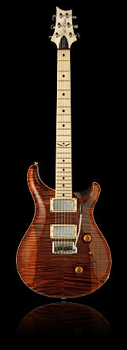

Johnny Hiland is perhaps one of the most versatile guitar players in the business. While he started off playing traditional bluegrass, he expanded and evolved to play in virtually any genre from country and jazz to rock and metal. No matter what genre he is playing, he is sure to both impress and inspire.
Johnny moved to Nashville in 1996 and quickly became a successful session musician for country stars such as Toby Keith, Ricky Skaggs, Janie Fricke, Trick Pony, and Hank Williams III. It wasn’t long before he was signed to Steve Vai’s Favored Nations label as a solo guitarist. The Johnny Hiland Band currently has two albums out, but Johnny has performed on countless others.
As a guitarist of such versatility, Johnny needed a guitar that could literally do it all. When he met with Paul Reed Smith, they collaborated on a guitar that could play anything from jazz to metal and everything in between. The result of that collaboration is the Johnny Hiland Signature Model.